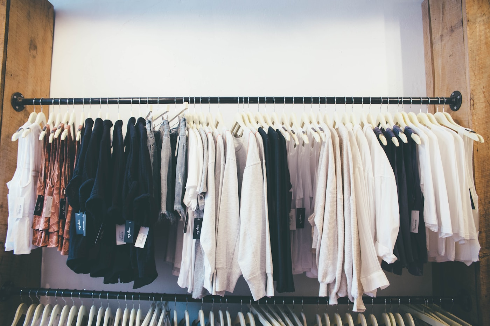

Информация и каталог
Семь страниц, описание команды и товаров, поиск и фильтрация.
Посмотреть товарыПроектная практика · Группа 251-352
Учебный магазин одежды: от структуры каталога до собственного HTTP-сервера. Цели, команда и процесс разработки в одном месте.

Что реализовано
Семь страниц, описание команды и товаров, поиск и фильтрация.
Посмотреть товарыTCP-сокеты, разбор запроса, выдача файлов и контроль доступа к путям.
Как это работаетЭтапы реализации, проверяемые результаты и техническое руководство.
Журнал проекта